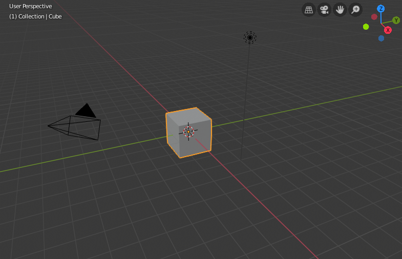

启动场景¶
After closing the splash, the startup scene is displayed in the 3D View if no other blend-file was loaded. A customized startup scene can be saved as a part of the startup file.

启动场景。
各个元素¶
- 立方体(Cube)
The gray cube in the center of the scene is a mesh object. Because the cube is selected it is displayed with an orange outline.
- 物体原点(Object Origin)
- The Origin of the object is displayed as an orange dot and it marks the cube's (relative) position.
- Light
- The circles with a thin line to the bottom is a light source illuminating the cube. Lights in: General Settings.
- 摄像机(Camera)
- The pyramid with a big triangle pointing upward is the camera used as point of view for rendering. See also: cameras in Cycles.
- 3D游标(3D Cursor)
- 3D游标, 一个有着红色和白色圆圈的十字形，用来在场景中放置物体。
- 栅格平面(Grid Floor)
- The gray squares forming a floor mark the zero height of the world. The red and green lines are the axis of the world coordinate system. They meet at the origin, which is also the position of the Cube. The Grid Floor settings are in the Viewport Overlay.
Text Info¶
The visibility and settings of the overlays can be set in the Viewport Overlay.
- 视窗名字
- 如果视口摄像机不是对齐方式的，视窗被命名为 "用户" 加上当前视口摄像机的透视方式。
- 回放FPS
- 在播放动画的过程中显示每秒钟的帧数。
- 物体信息
- Shown in brackets is the current frame. Followed by the path of the active object. And optionally the selected shape key and in brackets (<>) the 标记 name on the current frame. The color of the Object Info is set by the 状态颜色 (keyframe only).